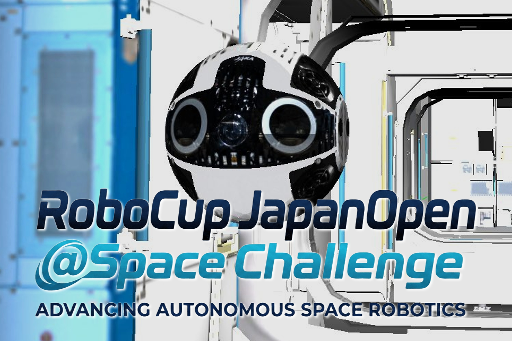

Purpose
Foster core space robotics technologies including AI, control, perception, and guidance.
RoboCup Japan Open Category
@Space Challenge is a competition category that promotes AI × space robotics technologies for future lunar/planetary exploration and on-orbit services.

Teams develop and integrate autonomous space robotics algorithms to solve practical mission-like tasks. The competition aims to build a community connecting education, research, and industry.
Foster core space robotics technologies including AI, control, perception, and guidance.
Students, research institutes, and companies.
Simulation-based task completion with score-based evaluation.
RoboCup JapanOpen 2026 @Space Challenge page is now available.
Initial competition rules were published.
Registration has started.
Results, rules, and schedules are managed in each year page.
Overview, rules, results, and related links.
Go to 2026 page →Use this page as a base to create future year pages.
Go to template page →